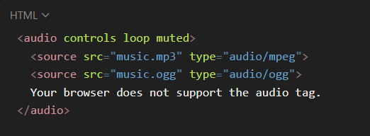
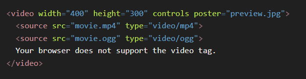
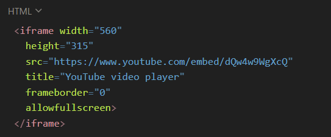

HTML Media
Definition:
HTML Media refers to the ability of HTML to embed and play multimedia content like audio, video, and external media (e.g., YouTube, iframes) directly in a webpage without needing extra plugins.
Types of Media in HTML
- Audio → <audio> tag (music, sound effects).
- Video → <video> tag (movies, clips, tutorials).
- External Media → <iframe> (YouTube, maps, external sites).
-
Supporting Features:
- <track> → subtitles/captions.
- Responsive media with CSS for different screen sizes.
<audio> Tag in HTML
Definition
The <audio> tag is used to play sound/music files on a webpage. It requires the controls attribute to display play, pause, and volume UI. It works with <source> to support multiple formats.
Important Attributes
- src → Path of the audio file (not recommended if using <source>).
- controls → Displays playback controls.
- autoplay → Starts playing automatically (not supported in all browsers).
- loop → Repeats audio continuously.
- muted → Starts audio muted.
-
preload → Defines how the browser loads audio:
- none → Doesn’t preload.
- metadata → Loads info (duration, etc.).
- auto → Loads full audio (default).
Example
code
<video> Tag in HTML
Definition
The <video> tag is used to embed videos into a webpage. It supports multiple video formats using <source> for better browser compatibility.
Important Attributes
- src → Path of the video file.
- controls → Displays playback options (play, pause, volume, etc.).
- autoplay → Starts video automatically.
- loop → Repeats the video continuously.
- muted → Starts video muted.
- poster → Preview image shown before the video plays.
- width & height → Sets the video size.
-
preload → Defines how the browser loads the video:
- none → Doesn’t preload.
- metadata → Loads video info (duration, etc.).
- auto → Loads full video (default).
Example
code
<source> Tag
The <source> tag is used inside <audio> or <video> elements to provide multiple file formats for better browser compatibility.
Attributes
- src → File path.
- type → MIME type (e.g., audio/mp3, video/mp4, video/ogg).
<iframe> Tag
The <iframe> tag is used to embed external media or content, such as YouTube videos, Google Maps, or other websites.
Important Attributes
- src → URL of the embedded content.
- width & height → Size of the frame.
- frameborder → Border thickness (0 = none).
- allowfullscreen → Enables fullscreen mode (useful for videos).
- loading="lazy" → Loads iframe only when it comes into view (performance boost).
Example (YouTube Video)
code
